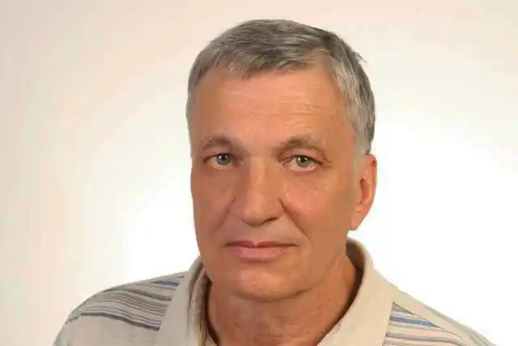

Віктор Васильович Терен (Таран) народився 9 липня 1941, с. Павлиш, Онуфріївський район, Кіровоградська область. Український політик та письменник. Народний депутат України ІІ — VI скликань. Член правління Національної спілки письменників України.
1958–1959 — слюсар-арматурник Крюківського кар'єроуправління, м.Кременчук.
1959–1965 — студент Харківського авіаційного інституту. 1965–1978 — технік, інженер, старший інженер заводу "Арсенал", м. Київ. 1978–1994 — позаштатний кореспондент газети "Молода гвардія". Редактор відділу видавництва "Дніпро". Відповідальний секретар Спілки письменників України. Головний редактор журналу "Розбудова держави". Мав виклики в КДБ, розсипано набір другої збірки, у 1971 році вилучався зі Спілки письменників. У 1984–1985 роках студіював словацьку мову в Братиславському університеті. З 1989 — заступник голови Руху міста Києва та області, член Проводу Руху. З 1992 — член УРП, заступник голови Проводу УРП, член Проводу УРП. З 1997 — член НРУ, член Центрального проводу НРУ (з березня 1999). Автор збірок: "Причетність" (1969), "Переклик" (1975), "Лінія часу" (1978), "Сполохи" (1983), "Подих степу" (1982), "Тривога і обов'язок" (1985), "Ковила на вітрі" (1991), "Твій день на землі" (2000) та інших, книги повістей і оповідань "Костюмчик до осені" (1989), дитячої книжки "В лісі, в темному горісі" (1984) та інші. Володіє словацькою та французькою мовами.